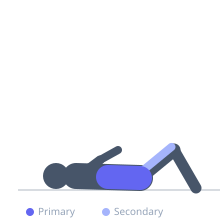
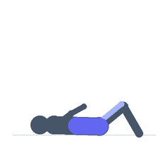

Exercise guide / Hollow Hold
Hollow Hold
The hollow hold is a foundational gymnastics isometric that trains the entire anterior chain in a compressed, coordinated position. The athlete lies supine, pressing the lower back into the floor, tucking the pelvis posteriorly, and raising the arms, shoulders, and legs off the floor while maintaining a curved, rigid body shape. It develops the rectus abdominis and transverse abdominis under sustained tension and serves as a prerequisite for many advanced calisthenics skills.
Primary muscles
rectus abdominis
transverse abdominis
Secondary muscles
iliacus
psoas major
Stabilizers
internal oblique
external oblique
Equipment
No Equipment (Bodyweight)


Starting position
- Lie flat on your back on the floor with your arms extended overhead and legs straight. Your entire back should be in contact with the floor.
Setup
- No equipment needed. Find a flat, firm surface with enough length to extend your body fully.
Steps
- Step 1: Lie on your back with arms extended overhead and legs straight.
- Step 2: Exhale fully and press your lower back firmly into the floor by posteriorly tilting the pelvis.
- Step 3: Raise your arms, shoulders, and head off the floor while simultaneously lifting your legs to approximately 30–45 degrees.
- Step 4: Point your toes, squeeze your thighs together, and hold the curved position for the prescribed duration.
- Step 5: Breathe shallowly through the nose to maintain tension. Lower with control when done.
Coaching cues
- Press your belly button to the floor
- Make your body look like a banana
- Think long and tight — squeeze everything
Breathing
- Exhale deeply to initiate the brace, then breathe shallowly through the nose during the hold. Avoid taking large breaths that cause the lower back to lift.
Range of motion
- The body should form a shallow concave curve from fingertips to toes. The lower back must remain in contact with the floor throughout.
Tempo
- Hold for 20–60 seconds. Progress duration before adding any weight or hollow body variations.
Common mistakes
- Allowing the lower back to arch away from the floor
- Raising the legs too high, which reduces core challenge
- Relaxing the shoulder and neck position midway through the hold
- Holding the breath instead of breathing shallowly
Safety
- If the lower back cannot stay flat on the floor, raise the legs higher or bend the knees to reduce the lever arm.
- Avoid if experiencing acute lower back pain.
Training
- strength: 1–1 reps
- endurance: 1–1 reps
- strength: 3–5 sets
- endurance: 3–5 sets
- Rest: {'strength': 60, 'endurance': 45}